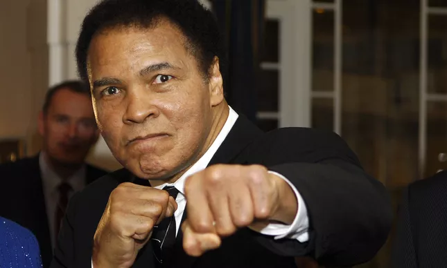

<h1><em>Biografia de Muhammad Ali</em></h1>
Muhammad Ali (1942-2016) foi um pugilista norte-americano, considerado um dos maiores boxeadores da história.

Muhammad Ali, nome adotado por Cassius Marcellus Clay Jr., nasceu na cidade de Louisville, Kentucky, Estados Unidos, no dia 17 de janeiro de 1942. Seu pai era um pintor de faixas e cartazes e sua mãe era uma empregada doméstica.

Início no box
Muhammad Ali começou a treinar boxe com apenas 12 anos de idade. Em 1960, com 18 anos ganhou sua primeira medalha de ouro nos Jogos Olímpicos de Roma, competindo na categoria meio-pesado contra o polonês Zbigniew Pietrzykowski.

Ainda em 1960, Muhammad Ali venceu sua primeira luta profissional realizada em Louisville, contra o também americano Tunney Hunsaker, em uma decisão que durou seis rounds.

Foi o início de uma série de 19 vitórias em 19 lutas, quando colecionou 15 nocautes. Em 15 de fevereiro de 1964, disputou o cinturão dos pesos-pesados, quando conquistou seu primeiro título mundial contra o campeão Sonny Liston, quando venceu por nocaute técnico no sétimo round.

Em seguida, engatou uma sequência de dez defesas do cinturando saindo vencedor em todas elas.

Religião e mudança de nome
Com 19 anos, “Cassius Clay” foi apresentado a Elijah Muhammad, líder de um movimento conhecido como “Nação do Islã”, um grupo religioso fundado em Detroit. Criado na Igreja Batista pelos pais, foi atraído pela causa, que incluía o ódio racial dada a violência de brancos contra negros nos EUA.

Ali frequentava as reuniões, mas mantinha seu envolvimento escondido do grande público. Em 1962 conheceu Malcolm X, que se tornou seu mentor no islamismo.

Inicialmente, Ali foi recusado pela Nação do Islã, devido a sua carreira no box, e condenado pelos segregacionistas brancos que o admiravam entre as cordas. Sua aproximação com Malcolm X e com Elijah e a racha dos dois, ganhou as manchetes dos jornais.

Na primeira luta com Sonny Liston, os membros da Nação estavam presentes na comitiva de Ali. Ao conquistar o título, em fevereiro de 1964, Cassius Clay anunciou sua adesão ao islamismo.

Logo em seguida trocou o “nome de escravo” por outro espiritual. Dali para frente seria Muhammad Ali (Muhammad de Maomé e Ali de elevado), nome decisivo para a história americana.

Convocação para a guerra e punição
Em fevereiro de 1966, o campeão mundial de pesos pesados, Muhammad Ali tornou-se apto para ir a Guerra do Vietnã. Quando soube da notícia pelos jornais que foram à sua procura em Miami, Ali disparou: “Não tenho nada contra esses vietcongues”.

A recusa do alistamento foi levada aos tribunais e lhe custou a perda do título mundial, foi banido do box por três anos, além de ser condenado a cinco anos de prisão.

O processo de Ali chegou até a Suprema Corte que lhe deu razão visando as convicções éticas, morais e religiosas e acabou por anular a condenação, e Ali foi obrigado a pagar uma multa de 10 mil dólares ao governo norte-americano.

Quando regressou aos ringues, em 1971, Ali reconquistou o cinturão em um duelo épico chamado a “Luta do Século”, mas perdeu para Joe Frazier, depois de 15 rounds, por decisão dos juízes.

A Luta do Século
No dia 31 de outubro de 1974, Muhammad Ali e George Foreman protagonizaram um confronto que ficou conhecida como “A Luta do Século”, realizada no Zaire (hoje República do Congo), na África. Ali estava com 32 anos.


<body bgcolor="#f2dfd3"></body>